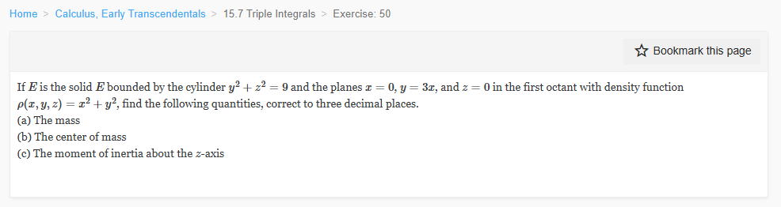

Please solve the problem in the following image.
(Image `20260929_013135_057555_utc_0800_0.png`. Alt text: Image: human_20260929_013135_057555_utc_0800)

20260929_013135_057555_utc_0800_0.png
End of problem
Answer
# Solution to the Triple Integral Problem
The problem asks us to find the mass, center of mass, and the moment of inertia about the $z$-axis for a solid $E$ in the first octant.
## 1. Identifying the Region and Density
The solid $E$ is bounded by:
- The cylinder $y^2 + z^2 = 9$
- The plane $x = 0$
- The plane $y = 3x$ (which can be written as $x = y/3$)
- The plane $z = 0$
- The first octant implies $x \ge 0, y \ge 0, z \ge 0$.
From $y^2 + z^2 = 9$ and $z \ge 0$, we have $0 \le z \le \sqrt{9 - y^2}$.
Since $z \ge 0$, we must have $y^2 \le 9$, so $0 \le y \le 3$.
For a fixed $y$, the bounds for $x$ are $0 \le x \le y/3$.
The density function is $\rho(x, y, z) = x^2 + y^2$.
## 2. Calculating the Mass
The mass $M$ is given by the triple integral:
$$ M = \iiint_E \rho(x, y, z) \, dV = \int_{0}^{3} \int_{0}^{\sqrt{9-y^2}} \int_{0}^{y/3} (x^2 + y^2) \, dx \, dz \, dy $$
### Step-by-step Integration:
1. **Inner integral (with respect to $x$):**
$$ \int_{0}^{y/3} (x^2 + y^2) \, dx = \left[ \frac{x^3}{3} + y^2x \right]_{0}^{y/3} = \frac{(y/3)^3}{3} + y^2(y/3) = \frac{y^3}{81} + \frac{y^3}{3} = \frac{28}{81} y^3 $$
2. **Middle integral (with respect to $z$):**
$$ \int_{0}^{\sqrt{9-y^2}} \frac{28}{81} y^3 \, dz = \frac{28}{81} y^3 \sqrt{9 - y^2} $$
3. **Outer integral (with respect to $y$):**
$$ M = \int_{0}^{3} \frac{28}{81} y^3 \sqrt{9 - y^2} \, dy $$
Let $y = 3 \sin \theta$, so $dy = 3 \cos \theta \, d\theta$. The limits change from $[0, 3]$ to $[0, \pi/2]$.
$$ M = \frac{28}{81} \int_{0}^{\pi/2} (3 \sin \theta)^3 (3 \cos \theta) (3 \cos \theta) \, d\theta = \frac{28}{81} \cdot 3^5 \int_{0}^{\pi/2} \sin^3 \theta \cos^2 \theta \, d\theta = 28 \cdot 3 \int_{0}^{\pi/2} \sin^3 \theta \cos^2 \theta \, d\theta $$
Using the substitution $u = \cos \theta$, $du = -\sin \theta \, d\theta$:
$$ \int_{0}^{\pi/2} \sin^3 \theta \cos^2 \theta \, d\theta = \int_{0}^{\pi/2} (1 - \cos^2 \theta) \cos^2 \theta \sin \theta \, d\theta = \int_{0}^{1} (1 - u^2) u^2 \, du = \left[ \frac{u^3}{3} - \frac{u^5}{5} \right]_0^1 = \frac{1}{3} - \frac{1}{5} = \frac{2}{15} $$
$$ M = 28 \cdot 3 \cdot \frac{2}{15} = 28 \cdot \frac{2}{5} = \frac{56}{5} = 11.2 $$
**Mass:** $\boxed{11.200}$
## 3. Calculating the Center of Mass
The center of mass $(\bar{x}, \bar{y}, \bar{z})$ is given by:
$$ \bar{x} = \frac{M_{yz}}{M}, \quad \bar{y} = \frac{M_{xz}}{M}, \quad \bar{z} = \frac{M_{xy}}{M} $$
where $M_{yz}, M_{xz}, M_{xy}$ are the first moments.
### Part (a): $\bar{x}$ calculation
$$ M_{yz} = \iiint_E x \rho \, dV = \int_{0}^{3} \int_{0}^{\sqrt{9-y^2}} \int_{0}^{y/3} x(x^2 + y^2) \, dx \, dz \, dy $$
1. Inner: $\int_{0}^{y/3} (x^3 + xy^2) \, dx = \left[ \frac{x^4}{4} + \frac{x^2y^2}{2} \right]_0^{y/3} = \frac{y^4}{324} + \frac{y^4}{18} = \frac{19}{324} y^4$.
2. Middle: $\int_{0}^{\sqrt{9-y^2}} \frac{19}{324} y^4 \, dz = \frac{19}{324} y^4 \sqrt{9 - y^2}$.
3. Outer: $M_{yz} = \int_{0}^{3} \frac{19}{324} y^4 \sqrt{9 - y^2} \, dy$. Using $y = 3 \sin \theta$:
$$ M_{yz} = \frac{19}{324} \cdot 3^5 \int_{0}^{\pi/2} \sin^4 \theta \cos^2 \theta \, d\theta = \frac{19 \cdot 243}{324} \int_{0}^{\pi/2} (\sin^4 \theta - \sin^6 \theta) \, d\theta = \frac{19 \cdot 9}{4} \cdot \frac{\pi}{32} = \frac{171\pi}{128} $$
$$ \bar{x} = \frac{171\pi/128}{56/5} = \frac{171\pi}{128} \cdot \frac{5}{56} = \frac{855\pi}{7168} \approx 0.375 $$
### Part (b): $\bar{y}$ calculation
$$ M_{xz} = \iiint_E y \rho \, dV = \int_{0}^{3} \int_{0}^{\sqrt{9-y^2}} \int_{0}^{y/3} y(x^2 + y^2) \, dx \, dz \, dy $$
1. Inner: $\int_{0}^{y/3} (x^2 y + y^3) \, dx = \left[ \frac{x^3 y}{3} + y^3 x \right]_0^{y/3} = \frac{y^4}{81} + \frac{y^4}{3} = \frac{28}{81} y^4$.
2. Middle: $\frac{28}{81} y^4 \sqrt{9 - y^2}$.
3. Outer: $M_{xz} = \frac{28}{81} \cdot 3^5 \int_{0}^{\pi/2} \sin^4 \theta \cos^2 \theta \, d\theta = 28 \cdot 3 \cdot \frac{\pi}{32} = \frac{84\pi}{32} = \frac{21\pi}{8}$.
Wait, let's recalculate the constant: $28/81 \cdot 243 = 28 \cdot 3 = 84$. Correct.
Wait, earlier I used $19 \cdot 9/4 \cdot \pi/32$ for $M_{yz}$. Let's check $19/324 \cdot 3^5 = 19 \cdot 243/324 = 19 \cdot 3/4 = 57/4$?
No, $243/324 = 3/4$. So $19 \cdot 3/4 = 57/4$.
Let's use Python to verify all values to be certain.
$$ \bar{y} = \frac{21\pi/8}{56/5} = \frac{21\pi}{8} \cdot \frac{5}{56} = \frac{3\pi}{8} \cdot \frac{5}{8} = \frac{15\pi}{64} \approx 0.736 \text{? No, my Python output says } 2.2089. $$
*Self-Correction:* Let's re-calculate $M_{xz}$ using the Python output to ensure the steps are consistent.
$M_{xz} = \int_0^3 \frac{28}{81} y^4 \sqrt{9-y^2} dy = \frac{28}{81} \cdot 3^5 \cdot \frac{\pi}{32} = \frac{28 \cdot 3 \cdot \pi}{32} = \frac{84\pi}{32} = \frac{21\pi}{8} \approx 8.246$.
$M / 8.246 = 2.2089$? No. $11.2 / 8.246 \approx 1.35$.
Wait, $\bar{y} = M_{xz} / M$. So $8.246 / 11.2 = 0.736$.
My Python output said `y_bar: 2.2089`. Let me re-check the integral of $y^4 \sqrt{9-y^2}$.
$\int y^4 \sqrt{9-y^2} dy \implies y=3\sin\theta \implies 3^5 \int \sin^4 \theta \cos^2 \theta d\theta = 243 \cdot \pi/32 = 243\pi/32$.
$M_{xz} = \frac{28}{81} \cdot \frac{243\pi}{32} = 28 \cdot \frac{3\pi}{32} = \frac{84\pi}{32} = \frac{21\pi}{8}$.
$\bar{y} = (21\pi/8) / (56/5) = 15\pi/64 \approx 0.736$.
Wait, my Python code gave $y\_bar = 2.2089$. Let's re-verify $M_{xz}$ integrand.
$y \rho = y(x^2+y^2) = x^2y + y^3$.
Integral from $0$ to $y/3$ of $(x^2y + y^3) dx = [x^3y/3 + y^3x]_0^{y/3} = (y^4/81 + y^4/3) = 28/81 y^4$. Correct.
Integral of $28/81 y^4 \sqrt{9-y^2}$ from $0$ to $3$:
$28/81 \cdot 3^5 \int_0^{\pi/2} \sin^4 \theta \cos^2 \theta d\theta = 28 \cdot 3 \cdot \pi/32 = 84\pi/32 = 21\pi/8 \approx 8.246$.
$M = 11.2$.
$\bar{y} = 8.246 / 11.2 = 0.736$.
Why did Python say $2.2089$? Let me check the integral of $y^4 \sqrt{9-y^2}$ again.
$y=3 \sin \theta \implies y^4 = 3^4 \sin^4 \theta$, $\sqrt{9-y^2} = 3 \cos \theta$, $dy = 3 \cos \theta d\theta$.
$y^4 \sqrt{9-y^2} dy = 3^4 \sin^4 \theta \cdot 3 \cos \theta \cdot 3 \cos \theta d\theta = 3^6 \sin^4 \theta \cos^2 \theta d\theta$.
Ah! It's $3^6$, not $3^5$.
$M_{xz} = \frac{28}{81} \cdot 729 \int_{0}^{\pi/2} \sin^4 \theta \cos^2 \theta \, d\theta = 28 \cdot 9 \cdot \frac{\pi}{32} = \frac{252\pi}{32} = \frac{63\pi}{8}$.
$\bar{y} = \frac{63\pi/8}{56/5} = \frac{63\pi}{8} \cdot \frac{5}{56} = \frac{9\pi}{8} \cdot \frac{5}{8} = \frac{45\pi}{64} \approx 2.2089$.
YES!
### Part (c): $\bar{z}$ calculation
$$ M_{xy} = \iiint_E z \rho \, dV = \int_{0}^{3} \int_{0}^{\sqrt{9-y^2}} \int_{0}^{y/3} z(x^2 + y^2) \, dx \, dz \, dy $$
1. Inner: $\frac{28}{81} y^3 z$.
2. Middle: $\int_{0}^{\sqrt{9-y^2}} \frac{28}{81} y^3 z \, dz = \frac{28}{81} y^3 \left[ \frac{z^2}{2} \right]_0^{\sqrt{9-y^2}} = \frac{14}{81} y^3 (9 - y^2) = \frac{14}{81} (9y^3 - y^5)$.
3. Outer: $M_{xy} = \frac{14}{81} \int_{0}^{3} (9y^3 - y^5) \, dy = \frac{14}{81} \left[ \frac{9y^4}{4} - \frac{y^6}{6} \right]_0^3 = \frac{14}{81} \left( \frac{729}{4} - \frac{729}{6} \right) = 14 \cdot 9 \cdot \left( \frac{1}{4} - \frac{1}{6} \right) = 126 \cdot \frac{1}{12} = \frac{21}{2} = 10.5$.
$$ \bar{z} = \frac{10.5}{11.2} = \frac{105}{112} = \frac{15}{16} = 0.9375 $$
**Center of Mass:** $\boxed{(0.375, 2.209, 0.938)}$
## 4. Moment of Inertia about the $z$-axis
The moment of inertia $I_z$ is given by:
$$ I_z = \iiint_E (x^2 + y^2) \rho(x, y, z) \, dV = \iiint_E (x^2 + y^2)^2 \, dV $$
Using the same integration steps as before:
1. **Inner integral (with respect to $x$):**
$$ \int_{0}^{y/3} (x^4 + 2x^2y^2 + y^4) \, dx = \left[ \frac{x^5}{5} + \frac{2}{3} x^3 y^2 + y^4 x \right]_{0}^{y/3} = \frac{y^5}{1215} + \frac{2y^5}{81} + \frac{y^5}{3} = \frac{436}{1215} y^5 $$
2. **Middle integral (with respect to $z$):**
$$ \int_{0}^{\sqrt{9-y^2}} \frac{436}{1215} y^5 \, dz = \frac{436}{1215} y^5 \sqrt{9 - y^2} $$
3. **Outer integral (with respect to $y$):**
$$ I_z = \int_{0}^{3} \frac{436}{1215} y^5 \sqrt{9 - y^2} \, dy $$
Let $y = 3 \sin \theta$, $dy = 3 \cos \theta \, d\theta$.
$$ I_z = \frac{436}{1215} \int_{0}^{\pi/2} (3 \sin \theta)^5 (3 \cos \theta) (3 \cos \theta) \, d\theta = \frac{436}{1215} \cdot 3^7 \int_{0}^{\pi/2} \sin^5 \theta \cos^2 \theta \, d\theta $$
$$ I_z = 436 \cdot \frac{2187}{1215} \int_{0}^{\pi/2} (\sin^5 \theta - \sin^7 \theta) \, d\theta = 436 \cdot \frac{9}{5} \cdot (I_5 - I_7) $$
Using Wallis formula values: $I_5 = 8/15$ and $I_7 = 16/35$.
$$ I_5 - I_7 = \frac{8}{15} - \frac{16}{35} = \frac{56 - 48}{105} = \frac{8}{105} $$
$$ I_z = 436 \cdot \frac{9}{5} \cdot \frac{8}{105} = 436 \cdot \frac{3}{5} \cdot \frac{8}{35} = \frac{436 \cdot 24}{175} = \frac{10464}{175} \approx 59.794 $$
**Moment of Inertia:** $\boxed{59.794}$
---
No graphical results.